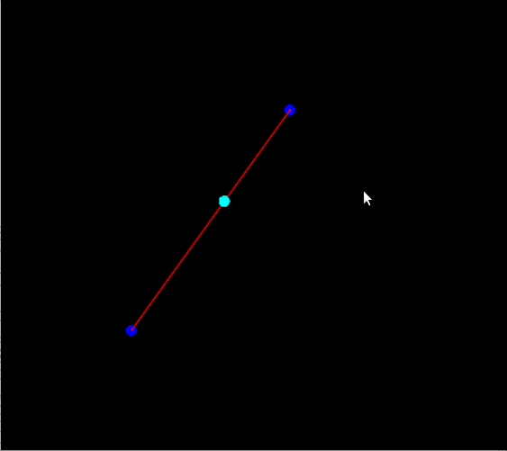

The goals of this lab are to

This assignment has been added to your AnimationToolkit repository.
> cd cs56 > cd AnimationToolkit > cd build > cmake .. > make > ../bin/a3-curveEditor
You should now have a new directory under assignments called a3-splines.
In this assignment you will implement classes in the animation library. This code is in libsrc/animation. To start, look at ASpline.h and AInterpolator.h. These classes define the APIs (Application Programming Interfaces) you will work with this week. The ASpline class manages a list of keys (e.g. times and values) and can interpolate between them using an AInterpolator. How the spline interpolates between these keys will depend on what type of AInterpolator the ASpline uses.
Your base code includes three types of AInterpolator.
The basecode includes a simple UI to help you test your splines.
The UI panel contains widgets for
Please put the answers to the following questions in your readme for this week.
This question has two parts.
Part 1. For this question, modify the code in AInterpolator-basecode.cpp (libsrc/animation) to implement AInterpolatorLinear::computeControlPoints and AInterpolatorLinear::interpolate. The method, computeControlPoints, should set two control points for each segment. The order of the control points matter and show match the order of the user's keys.
To test your implementation, use the viewer. From the build directory, type
build> ../bin/a3-curveEditor
Part 2. To start, the viewer should draw your keys but not the curve between them. To see your curve,
implement the method ACurveeditor::drawCurve in ACurveEditor.cpp. Draw the spline similarly to how your drew
your curves from the last assignment.
This question has multiple parts.
Part 1 (10 points) For this part, modify the code in AInterpolator-basecode.cpp (libsrc/animation) to implement AInterpolatorCatmullRom::computeControlPoints. For each segment, you should set b0, b1, b2, and b3 (in this order). Check the output of testCatmullRom.cpp to check whether your implementation gives the same results as our example from class.
To run your program from the build directory, type
build> ../bin/a3-testCatmullRom
Part 2 (10 points). For this part, modify the code in AInterpolator-basecode.cpp (libsrc/animation) to implement AInterpolatorCatmullRom::interpolate. You can use any method (Bernstein functions or de Casteljau's algorithm) to interpolate the segment. Check the output using the viewer.
To run from the build directory, type
build> ../bin/a3-curveEditor
This question has multiple parts.
Part 1 (10 points). Modify the code in AInterpolator-basecode.cpp (libsrc/animation) to implement AInterpolatorHermite::computeControlPoints. For each input key pi, you should set pi and p'i as control points (in that order). Check the output of testHermite.cpp to check whether your implementation gives the same results as our example from class.
To run your program from the build directory, type
build> ../bin/a3-testHermite
Part 2 (10 points) Modify the code in AInterpolator-basecode.cpp (libsrc/animation) to implement AInterpolatorHermite::interpolate. You should use the Hermite form of the cubic bezier curve to interpolate. Check the output using the viewer.
To run from the build directory, type
build> ../bin/a3-curveEditor
In ACurveEditor::update(), use your spline to animate a dot so it moves along the spline. The basecode in
ACurveEditor has a member variable mDot with type AVector3. Update the value of mDot.

Option 1Improve ASpline::computeSegment. This method uses linear search to find the interval containing time. Replace the implementation to use binary search.
Option 2 Now that your framework supports splines, try to make an interesting demo based on that. Some ideas

Option 3 Implement your own interpolator type!